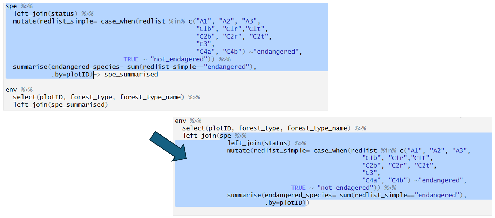
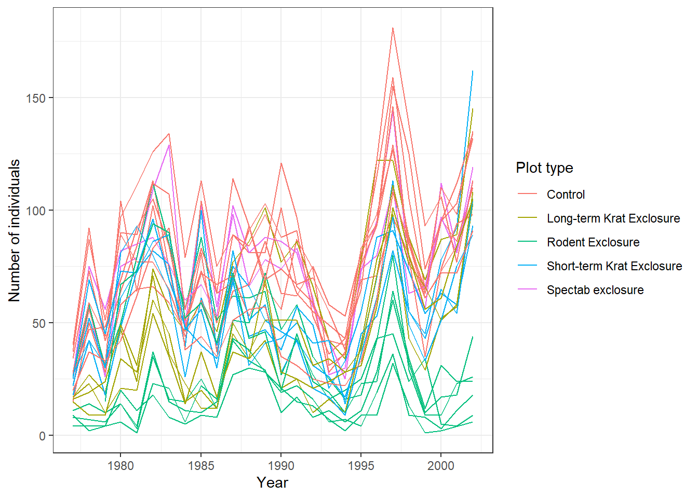
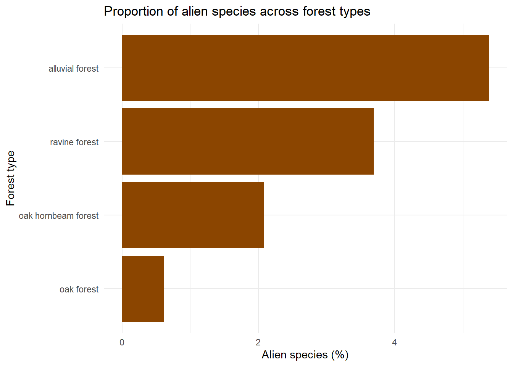
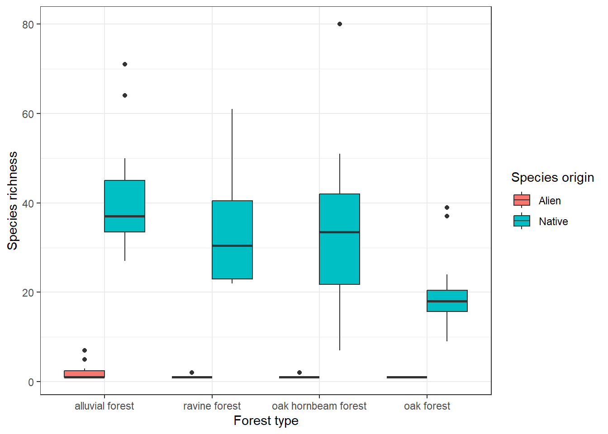
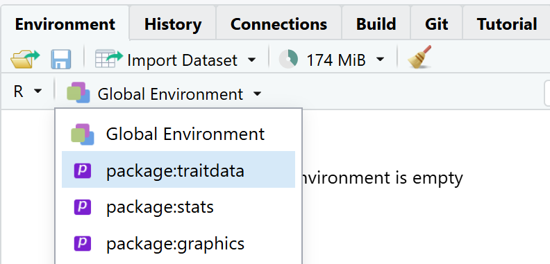

library(tidyverse)
library(readxl)
library(janitor)10 Advanced pipeline workflows
In this chapter, we will practice how to combine several individual steps into elegant pipelines, and we will also use so-called nested pipelines. We will even prepare pipelines from reading the file to writing the output. We will check possible drawbacks with the use of group_by in long pipelines. In addition, we will practise the n_distinct function.
First, upload the following libraries
We will now return to the forest understory data we already know. Import the data into your environment and check the structure of the datasets. First, the header data and measured variables about the environment “env”, and species data”spe”, together with data about some plant characteristics “traits”, such as plant height, or species “status” , i.e. information if the species is native or alien, and how endangered it is.
env <- read_csv("data/forest_understory/Axmanova-Forest-env.csv") Rows: 65 Columns: 13
── Column specification ────────────────────────────────────────────────────────
Delimiter: ","
chr (1): ForestTypeName
dbl (12): RELEVE_NR, ForestType, Biomass, pH_KCl, Canopy_E3, Radiation, Heat...
ℹ Use `spec()` to retrieve the full column specification for this data.
ℹ Specify the column types or set `show_col_types = FALSE` to quiet this message.spe <- read_csv("data/forest_understory/Axmanova-Forest-spe.csv")Rows: 2277 Columns: 4
── Column specification ────────────────────────────────────────────────────────
Delimiter: ","
chr (1): Species
dbl (3): RELEVE_NR, Layer, CoverPerc
ℹ Use `spec()` to retrieve the full column specification for this data.
ℹ Specify the column types or set `show_col_types = FALSE` to quiet this message.status <- read_csv("data/turboveg_to_R/status.csv")Rows: 6098 Columns: 3
── Column specification ────────────────────────────────────────────────────────
Delimiter: ","
chr (3): species, origin, redlist
ℹ Use `spec()` to retrieve the full column specification for this data.
ℹ Specify the column types or set `show_col_types = FALSE` to quiet this message.traits <- read_csv("data/forest_understory/traits.csv") Rows: 316 Columns: 7
── Column specification ────────────────────────────────────────────────────────
Delimiter: ","
chr (1): Taxon
dbl (6): Height, SeedMass, EIV_Light, EIV_Moisture, EIV_Reaction, EIV_Nutrients
ℹ Use `spec()` to retrieve the full column specification for this data.
ℹ Specify the column types or set `show_col_types = FALSE` to quiet this message.After checking the data, I am not happy about the different fonts and different names used for the same things - Species, species and taxon are used in different files for the same information. Therefore, I decided to upload the data once again using the clean names function and renaming some of the columns.
First, the header and measured data = env data:
env <- read_csv("data/forest_understory/Axmanova-Forest-env.csv") %>%
clean_names() %>%
rename(plotID=releve_nr, pH=p_h_k_cl)Rows: 65 Columns: 13
── Column specification ────────────────────────────────────────────────────────
Delimiter: ","
chr (1): ForestTypeName
dbl (12): RELEVE_NR, ForestType, Biomass, pH_KCl, Canopy_E3, Radiation, Heat...
ℹ Use `spec()` to retrieve the full column specification for this data.
ℹ Specify the column types or set `show_col_types = FALSE` to quiet this message.env# A tibble: 65 × 13
plotID forest_type forest_type_name biomass pH canopy_e3 radiation heat
<dbl> <dbl> <chr> <dbl> <dbl> <dbl> <dbl> <dbl>
1 1 2 oak hornbeam fore… 12.8 5.28 80 0.881 0.857
2 2 1 oak forest 9.9 3.24 80 0.933 0.814
3 3 1 oak forest 15.2 4.01 80 0.916 0.850
4 4 1 oak forest 16 3.76 75 0.930 0.948
5 5 1 oak forest 20.7 3.50 70 0.869 0.869
6 6 1 oak forest 46.4 3.8 65 0.918 0.883
7 7 1 oak forest 49.2 3.48 65 0.829 0.803
8 8 2 oak hornbeam fore… 48.7 3.68 85 0.869 0.869
9 9 2 oak hornbeam fore… 13.8 4.24 80 0.614 0.423
10 10 1 oak forest 79.1 4.00 70 0.905 0.930
# ℹ 55 more rows
# ℹ 5 more variables: twi <dbl>, longitude <dbl>, latitude <dbl>,
# deg_lon <dbl>, deg_lat <dbl>Now, the species data and species characteristics:
spe <- read_csv("data/forest_understory/Axmanova-Forest-spe.csv") %>%
clean_names() %>% rename(plotID=releve_nr)Rows: 2277 Columns: 4
── Column specification ────────────────────────────────────────────────────────
Delimiter: ","
chr (1): Species
dbl (3): RELEVE_NR, Layer, CoverPerc
ℹ Use `spec()` to retrieve the full column specification for this data.
ℹ Specify the column types or set `show_col_types = FALSE` to quiet this message.spe# A tibble: 2,277 × 4
plotID species layer cover_perc
<dbl> <chr> <dbl> <dbl>
1 1 Quercus petraea agg. 1 63
2 1 Acer campestre 1 18
3 1 Crataegus laevigata 4 2
4 1 Cornus mas 4 8
5 1 Lonicera xylosteum 4 3
6 1 Galium sylvaticum 6 3
7 1 Carex digitata 6 3
8 1 Melica nutans 6 2
9 1 Polygonatum odoratum 6 2
10 1 Geum urbanum 6 2
# ℹ 2,267 more rowsstatus <- read_csv("data/turboveg_to_R/status.csv") %>% clean_names()Rows: 6098 Columns: 3
── Column specification ────────────────────────────────────────────────────────
Delimiter: ","
chr (3): species, origin, redlist
ℹ Use `spec()` to retrieve the full column specification for this data.
ℹ Specify the column types or set `show_col_types = FALSE` to quiet this message.status# A tibble: 6,098 × 3
species origin redlist
<chr> <chr> <chr>
1 Abies native <NA>
2 Abies alba native C4a
3 Abies cephalonica neo <NA>
4 Abies concolor neo <NA>
5 Abies grandis neo <NA>
6 Abies homolepis neo <NA>
7 Abies nordmanniana neo <NA>
8 Abutilon theophrasti neo <NA>
9 Acacia farnesiana neo <NA>
10 Acaena microphylla neo <NA>
# ℹ 6,088 more rowstraits <- read_csv("data/forest_understory/traits.csv") %>%
clean_names() %>% rename(species=taxon)Rows: 316 Columns: 7
── Column specification ────────────────────────────────────────────────────────
Delimiter: ","
chr (1): Taxon
dbl (6): Height, SeedMass, EIV_Light, EIV_Moisture, EIV_Reaction, EIV_Nutrients
ℹ Use `spec()` to retrieve the full column specification for this data.
ℹ Specify the column types or set `show_col_types = FALSE` to quiet this message.traits# A tibble: 316 × 7
species height seed_mass eiv_light eiv_moisture eiv_reaction eiv_nutrients
<chr> <dbl> <dbl> <dbl> <dbl> <dbl> <dbl>
1 Quercus p… 25 975. 6 5 5 4
2 Acer camp… 7.5 54.3 5 5 7 6
3 Crataegus… 5.5 276. 5 5 7 5
4 Cornus mas 4 488. 6 4 8 5
5 Lonicera … 2 164. 4 5 7 6
6 Galium sy… 0.85 1.10 5 5 6 5
7 Carex dig… 0.2 1.44 4 5 6 6
8 Melica nu… 0.45 2.49 4 5 6 4
9 Polygonat… 0.45 264. 6 3 7 3
10 Geum urba… 0.55 2.05 5 5 6 7
# ℹ 306 more rowsImagine we want to know something about our forest types - what is their overall species richness? Are there some types more rich compared to the others? What about endangered species- how frequent are they, and what is their relative share in individual forest types? In contrast, what is the relative share of alien plants in each type? Are some of them more prone to invasion? We already know how to do that step by step, but we will try different tips to make our workflow more effective.
10.1 Nested pipelines
A simple example of the use of nested pipelines is below. Imagine I have a species file, and I want to summarise mean plant height, not in individual plots but in the group of plots from the same vegetation type. The first step is to join the trait file with plant heights, but I also do not have information about the vegetation type in the species file. I do not need anything else from the env file, so I append just a relevant part of the env file by selecting two variables: plotID, which is the key to match the files, and forest_type_name, which is the one I need for the comparison I want to do.
spe %>%
filter(layer=="6") %>%
left_join(traits) %>%
left_join(env %>%
select(plotID, forest_type_name)) %>%
summarise(mean_plant_height= mean(height, na.rm=TRUE),.by=forest_type_name) Joining with `by = join_by(species)`
Joining with `by = join_by(plotID)`# A tibble: 4 × 2
forest_type_name mean_plant_height
<chr> <dbl>
1 oak hornbeam forest 0.536
2 oak forest 0.507
3 alluvial forest 0.641
4 ravine forest 0.496Here, the nested part is where we apply the select function to the env file. You can also notice it by the different alignment of the text. So, before joining the env file, we apply to it the rest of the steps which are after the corresponding pipe.
env %>% select(plotID, forest_type_name)# A tibble: 65 × 2
plotID forest_type_name
<dbl> <chr>
1 1 oak hornbeam forest
2 2 oak forest
3 3 oak forest
4 4 oak forest
5 5 oak forest
6 6 oak forest
7 7 oak forest
8 8 oak hornbeam forest
9 9 oak hornbeam forest
10 10 oak forest
# ℹ 55 more rowsNow we will examine the use of a more complicated nested pipeline. First, let´s use the step-by-step process to prepare a summary of how many endangered species are in the plots. In the species file, the information about status is not directly available, so we have to join it first.
We can see that in the status file, this information is in the “redlist” variable, and the categories are variants of A (extinct) and C1, C2, C3 and C4 (with descending threat from 1 to 4).
names(spe)[1] "plotID" "species" "layer" "cover_perc"names(status)[1] "species" "origin" "redlist"status %>% count(redlist) %>% view()We can therefore filter just those species that are in some of the redlist categories and count them. However, we have this information in a separate file only, and if we want to merge it into the env file, we have to save it and join it in another step.
spe %>%
left_join(status) %>%
filter(!is.na(redlist)) %>%
group_by(plotID) %>%
count(name="endangered_species")Joining with `by = join_by(species)`# A tibble: 47 × 2
# Groups: plotID [47]
plotID endangered_species
<dbl> <int>
1 1 7
2 4 2
3 5 2
4 7 1
5 8 1
6 10 3
7 11 1
8 14 1
9 18 1
10 32 1
# ℹ 37 more rowsMoreover, there is another problem. Do you know what? If there is a plot with no endangered species, it is not in the final file, and if we append it to the env file, the resulting variable has NAs in some rows instead of zero. See the output below.
spe %>%
left_join(status) %>%
filter(!is.na(redlist)) %>%
group_by(plotID) %>%
count(name="endangered_species")-> spe_summarisedJoining with `by = join_by(species)`env %>%
select(plotID, forest_type, forest_type_name) %>%
left_join(spe_summarised)Joining with `by = join_by(plotID)`# A tibble: 65 × 4
plotID forest_type forest_type_name endangered_species
<dbl> <dbl> <chr> <int>
1 1 2 oak hornbeam forest 7
2 2 1 oak forest NA
3 3 1 oak forest NA
4 4 1 oak forest 2
5 5 1 oak forest 2
6 6 1 oak forest NA
7 7 1 oak forest 1
8 8 2 oak hornbeam forest 1
9 9 2 oak hornbeam forest NA
10 10 1 oak forest 3
# ℹ 55 more rowsSo we should use a more sofisticated summarise instead of count only.
spe %>%
left_join(status) %>%
mutate(redlist_simple= case_when(is.na(redlist) ~ "not endangered",
TRUE ~ "endangered")) %>%
summarise(endangered_species= sum(redlist_simple=="endangered"),
.by=plotID)-> spe_summarisedJoining with `by = join_by(species)`env %>%
select(plotID, forest_type, forest_type_name) %>%
left_join(spe_summarised)Joining with `by = join_by(plotID)`# A tibble: 65 × 4
plotID forest_type forest_type_name endangered_species
<dbl> <dbl> <chr> <int>
1 1 2 oak hornbeam forest 7
2 2 1 oak forest 0
3 3 1 oak forest 0
4 4 1 oak forest 2
5 5 1 oak forest 2
6 6 1 oak forest 0
7 7 1 oak forest 1
8 8 2 oak hornbeam forest 1
9 9 2 oak hornbeam forest 0
10 10 1 oak forest 3
# ℹ 55 more rowsIn case we want to select only some categories as endangered, we need to list those relevant. Below, I selected all categories, but some people might be interested only in the more threatened categories e. g. C1-C3. Still, we use two steps.
spe %>%
left_join(status) %>%
mutate(redlist_simple= case_when(redlist %in% c("A1", "A2", "A3",
"C1b", "C1r","C1t",
"C2b", "C2r", "C2t",
"C3",
"C4a", "C4b") ~"endangered",
TRUE ~ "not_endagered")) %>%
summarise(endangered_species= sum(redlist_simple=="endangered"),
.by=plotID)-> spe_summarisedJoining with `by = join_by(species)`env %>%
select(plotID, forest_type, forest_type_name) %>%
left_join(spe_summarised)Joining with `by = join_by(plotID)`# A tibble: 65 × 4
plotID forest_type forest_type_name endangered_species
<dbl> <dbl> <chr> <int>
1 1 2 oak hornbeam forest 7
2 2 1 oak forest 0
3 3 1 oak forest 0
4 4 1 oak forest 2
5 5 1 oak forest 2
6 6 1 oak forest 0
7 7 1 oak forest 1
8 8 2 oak hornbeam forest 1
9 9 2 oak hornbeam forest 0
10 10 1 oak forest 3
# ℹ 55 more rowsAlthough this already works well, we created intermediate objects that we do not really need. Let’s make all the steps with the use of nested pipes
env %>%
select(plotID, forest_type, forest_type_name) %>%
left_join(spe %>%
left_join(status) %>%
mutate(redlist_simple= case_when(redlist %in% c("A1", "A2", "A3",
"C1b", "C1r","C1t",
"C2b", "C2r", "C2t",
"C3",
"C4a", "C4b") ~"endangered",
TRUE ~ "not_endagered")) %>%
summarise(endangered_species= sum(redlist_simple=="endangered"),
.by=plotID))Joining with `by = join_by(species)`
Joining with `by = join_by(plotID)`# A tibble: 65 × 4
plotID forest_type forest_type_name endangered_species
<dbl> <dbl> <chr> <int>
1 1 2 oak hornbeam forest 7
2 2 1 oak forest 0
3 3 1 oak forest 0
4 4 1 oak forest 2
5 5 1 oak forest 2
6 6 1 oak forest 0
7 7 1 oak forest 1
8 8 2 oak hornbeam forest 1
9 9 2 oak hornbeam forest 0
10 10 1 oak forest 3
# ℹ 55 more rowsWhat happened is shown below. In the first code chunk, we used a step-by-step approach and the shaded part was used to create a separate object. In the second approach, the same was implemented as a nested pipeline. In such a case, we usually first test the outcome of the nested pipeline (e.g. by sending it to the console step by step, or by writing it separately) and only after that, we combine the chunks together with the main pipeline.

In case there are more complicated steps, you might still prefer to use intermediate objects, and it is OK if it works for you. Still, you can give it a try at least with the simple things :-)
10.2 Species richness with n_distinct
Let´s play a bit with the nested pipelines. Below, we are calculating the species richness in each plot, considering only unique species names. What is the disadvantage of the approach we used?
names(spe)[1] "plotID" "species" "layer" "cover_perc"spe %>%
group_by(plotID) %>%
distinct(species) %>%
count (name="species_richness") -> spe_richness
spe_richness# A tibble: 65 × 2
# Groups: plotID [65]
plotID species_richness
<dbl> <int>
1 1 42
2 2 16
3 3 15
4 4 20
5 5 14
6 6 19
7 7 22
8 8 23
9 9 22
10 10 18
# ℹ 55 more rowsTo get this result, we can preferably use the n_distinct function, which combines two steps: distinct and count of grouped variables. If we use the .by in the function itself, we have the advantage that the data are not grouped further.
spe %>%
summarise(species_richness = n_distinct(species),
.by = plotID)-> spe_richness
spe_richness# A tibble: 65 × 2
plotID species_richness
<dbl> <int>
1 1 42
2 2 16
3 3 15
4 4 20
5 5 14
6 6 19
7 7 22
8 8 23
9 9 22
10 10 18
# ℹ 55 more rowsIn both examples, we prepared intermediate objects and if we want to have this information in the env file, we have to use join functions to add it. So the next step is to use left_join (I selected from the env file just a few variables to make it easier to see the result).
env %>%
left_join(spe_richness) %>%
select (plotID, forest_type, forest_type_name, species_richness)Joining with `by = join_by(plotID)`# A tibble: 65 × 4
plotID forest_type forest_type_name species_richness
<dbl> <dbl> <chr> <int>
1 1 2 oak hornbeam forest 42
2 2 1 oak forest 16
3 3 1 oak forest 15
4 4 1 oak forest 20
5 5 1 oak forest 14
6 6 1 oak forest 19
7 7 1 oak forest 22
8 8 2 oak hornbeam forest 23
9 9 2 oak hornbeam forest 22
10 10 1 oak forest 18
# ℹ 55 more rowsNote that if we want to keep this information for later, we also have to save it as another object or overwrite the file.
env %>%
left_join(spe_richness) %>%
select (plotID, forest_type, forest_type_name, species_richness) ->env_newJoining with `by = join_by(plotID)`Again, all this can be done in a more elegant pipeline. We would use the env file and append summarised information directly from a nested pipeline based on spe data. It would look like this:
env %>%
select (plotID, forest_type, forest_type_name) %>%
left_join(spe %>%
summarise(species_richness = n_distinct(species),
.by = plotID))Joining with `by = join_by(plotID)`# A tibble: 65 × 4
plotID forest_type forest_type_name species_richness
<dbl> <dbl> <chr> <int>
1 1 2 oak hornbeam forest 42
2 2 1 oak forest 16
3 3 1 oak forest 15
4 4 1 oak forest 20
5 5 1 oak forest 14
6 6 1 oak forest 19
7 7 1 oak forest 22
8 8 2 oak hornbeam forest 23
9 9 2 oak hornbeam forest 22
10 10 1 oak forest 18
# ℹ 55 more rows10.3 Group and ungroup -what does it mean and how it matters
We already worked with group_by, especially for mutate and summarise functions. However, with long or nested pipelines, we should think more deeply about how we use the grouping variable.
Imagine a situation where I want to calculate the mean species richness in each forest type. First, I will use n_distinct to calculate species richness in each plot, and then I will calculate the mean for the forest type. This involves two different grouping variables.
In the first example, I would use explicit ungroup () after the first grouping to
spe %>%
group_by(plotID) %>%
summarise(species_richness=n_distinct(species)) %>%
ungroup() %>%
left_join (env %>%
select(plotID, forest_type, forest_type_name)) %>%
group_by(forest_type_name) %>%
summarise(mean_richness =mean(species_richness))Joining with `by = join_by(plotID)`# A tibble: 4 × 2
forest_type_name mean_richness
<chr> <dbl>
1 alluvial forest 43.7
2 oak forest 19.8
3 oak hornbeam forest 32.6
4 ravine forest 35 In this particular example, even if you forget to use ungroup, it should actually work correctly. But only because I did apply the second grouping correctly, which automatically removes the previous grouping.
spe %>%
group_by(plotID) %>%
summarise(species_richness=n_distinct(species)) %>%
left_join (env %>%
select(plotID, forest_type, forest_type_name)) %>%
group_by(forest_type_name) %>%
summarise(mean_richness =mean(species_richness))Joining with `by = join_by(plotID)`# A tibble: 4 × 2
forest_type_name mean_richness
<chr> <dbl>
1 alluvial forest 43.7
2 oak forest 19.8
3 oak hornbeam forest 32.6
4 ravine forest 35 If I forget, the result would be different. Either I forget to specify the second grouping, and there is also no ungroup, so the first grouping holds till the end of the pipeline.
spe %>%
group_by(plotID) %>%
summarise(species_richness=n_distinct(species)) %>%
left_join (env %>%
select(plotID, forest_type, forest_type_name)) %>%
summarise(mean_richness =mean(species_richness))Joining with `by = join_by(plotID)`# A tibble: 1 × 1
mean_richness
<dbl>
1 31.7Or I forgot to use the second grouping, but I remember to use ungroup. What happened here? I calculate the mean from the whole dataset.
spe %>%
group_by(plotID) %>%
summarise(species_richness=n_distinct(species)) %>%
ungroup() %>%
left_join (env %>%
select(plotID, forest_type, forest_type_name)) %>%
summarise(mean_richness =mean(species_richness))Joining with `by = join_by(plotID)`# A tibble: 1 × 1
mean_richness
<dbl>
1 31.7Mutate vs. summarise. I can still make a bit more mess. If I use mutate incorrectly, as in the example below, the number of rows is not reduced as with summarise, and the species_richness of the plot is repeated in each row. The result is therefore affected by the number of species=rows in each plot and is simply wrong.
spe %>%
group_by(plotID) %>%
mutate(species_richness=n_distinct(species)) %>%
ungroup() %>%
left_join (env %>%
select(plotID, forest_type, forest_type_name)) %>%
group_by(forest_type_name) %>%
summarise(mean_richness =mean(species_richness))Joining with `by = join_by(plotID)`# A tibble: 4 × 2
forest_type_name mean_richness
<chr> <dbl>
1 alluvial forest 47.6
2 oak forest 22.7
3 oak hornbeam forest 39.4
4 ravine forest 38.8On the other hand, sometimes I want to keep all rows and calculate different characteristics based on the original data, which would not be possible with summarise.
Remember, to be safest, you should preferably use the .by in the function itself. This means the grouping applies only in the relevant part and is no longer active for the rest of the pipeline.
spe %>%
summarise(species_richness = n_distinct(species),
.by = plotID) %>%
left_join(env %>%
select(plotID, forest_type, forest_type_name)) %>%
summarise(mean_richness = mean(species_richness),
.by = forest_type_name)Joining with `by = join_by(plotID)`# A tibble: 4 × 2
forest_type_name mean_richness
<chr> <dbl>
1 oak hornbeam forest 32.6
2 oak forest 19.8
3 alluvial forest 43.7
4 ravine forest 35 *Using groups before introduction of .by. The option to use .by is not that old compared to stand-alone group_by, which has a longer tradition but also many cons. If you use more grouping variables within group_by, after summarise, the last one is removed by default. If you have two or more, it may change things a lot. Therefore, you may use the groups argument to adjust the steps. Either “keep” to keep the same grouping after the first summarise. In contrast, if you do not want to keep any grouping variable further, the other option is to use “drop”, which removes grouping from the result. See further reading for more details.
spe %>%
left_join(env %>%
select(plotID, forest_type_name)) %>%
group_by(forest_type_name, plotID) %>%
summarise(
species_richness = n_distinct(species),
.groups = "keep") %>%
mutate(species_rich = species_richness > 30) %>%
group_by(forest_type_name) %>%
summarise(
n_plots = n(),
n_rich_plots = sum(species_rich),
percentage_rich_plots = n_rich_plots/n_plots*100,
.groups = "drop")Joining with `by = join_by(plotID)`# A tibble: 4 × 4
forest_type_name n_plots n_rich_plots percentage_rich_plots
<chr> <int> <int> <dbl>
1 alluvial forest 11 9 81.8
2 oak forest 16 2 12.5
3 oak hornbeam forest 28 17 60.7
4 ravine forest 10 5 50 A safe way of the same would be like this:
spe %>%
left_join(env %>%
select(plotID, forest_type_name)) %>%
summarise(species_richness = n_distinct(species),
.by = c(forest_type_name, plotID)) %>%
mutate(species_rich = species_richness > 30) %>%
summarise(n_plots = n(),
n_rich_plots = sum(species_rich),
percentage_rich_plots = n_rich_plots / n_plots * 100,
.by = forest_type_name)Joining with `by = join_by(plotID)`# A tibble: 4 × 4
forest_type_name n_plots n_rich_plots percentage_rich_plots
<chr> <int> <int> <dbl>
1 oak hornbeam forest 28 17 60.7
2 oak forest 16 2 12.5
3 alluvial forest 11 9 81.8
4 ravine forest 10 5 50 10.4 Read and plot/write in one pipeline
The advantage of ggplot is that it works in a similar way to pipelines. Therefore, we can start with adjusting the data and continue with ggplot. The only difference is that you no longer specify which data you should use, and you switch from pipes “%>%” or “|>” to the symbol used in the ggplot logic, which is “+”. In the extreme case, you do not even need to name the data you are reading, and you can produce the plot directly.
read_csv("https://raw.githubusercontent.com/weecology/portal-teachingdb/master/combined.csv") %>%
filter(taxa == 'Rodent') %>%
count(plot_id, plot_type, year) %>%
ggplot(aes(x = year, y = n,
color = plot_type, group = plot_id)) +
geom_line() +
theme_bw() +
labs(x = 'Year', y = 'Number of individuals', color = 'Plot type')Rows: 34786 Columns: 13
── Column specification ────────────────────────────────────────────────────────
Delimiter: ","
chr (6): species_id, sex, genus, species, taxa, plot_type
dbl (7): record_id, month, day, year, plot_id, hindfoot_length, weight
ℹ Use `spec()` to retrieve the full column specification for this data.
ℹ Specify the column types or set `show_col_types = FALSE` to quiet this message.
Other option is that I want to prepare data in some specific format, subset it, rename etc. And I actually prefer to do this from the beginning. One option is to adjust the data and save it to an intermediate object.
#import the data
rats <-read_csv("https://raw.githubusercontent.com/weecology/portal-teachingdb/master/combined.csv")Rows: 34786 Columns: 13
── Column specification ────────────────────────────────────────────────────────
Delimiter: ","
chr (6): species_id, sex, genus, species, taxa, plot_type
dbl (7): record_id, month, day, year, plot_id, hindfoot_length, weight
ℹ Use `spec()` to retrieve the full column specification for this data.
ℹ Specify the column types or set `show_col_types = FALSE` to quiet this message.#use different ways to check the data
names(rats) [1] "record_id" "month" "day" "year"
[5] "plot_id" "species_id" "sex" "hindfoot_length"
[9] "weight" "genus" "species" "taxa"
[13] "plot_type" rats %>% count(taxa)# A tibble: 4 × 2
taxa n
<chr> <int>
1 Bird 450
2 Rabbit 75
3 Reptile 14
4 Rodent 34247rats %>% count(year)# A tibble: 26 × 2
year n
<dbl> <int>
1 1977 487
2 1978 992
3 1979 658
4 1980 1375
5 1981 1417
6 1982 1964
7 1983 1652
8 1984 951
9 1985 1416
10 1986 922
# ℹ 16 more rows#prepare subset
rodents<- rats %>%
filter(taxa=="Rodent" & year >= 1980) %>%
filter(!species== "sp.") %>%
unite("species_name", genus,species, na.rm = T)
rodents# A tibble: 32,050 × 12
record_id month day year plot_id species_id sex hindfoot_length weight
<dbl> <dbl> <dbl> <dbl> <dbl> <chr> <chr> <dbl> <dbl>
1 2406 1 16 1980 2 NL F 33 184
2 2728 3 9 1980 2 NL F NA NA
3 3000 5 18 1980 2 NL F 31 87
4 3002 5 18 1980 2 NL F 33 174
5 4667 7 8 1981 2 NL F 30 130
6 4859 10 1 1981 2 NL M 34 208
7 5048 11 23 1981 2 NL M 34 192
8 5180 1 1 1982 2 NL M NA 206
9 5299 1 25 1982 2 NL F 32 165
10 5485 2 24 1982 2 NL M 34 202
# ℹ 32,040 more rows
# ℹ 3 more variables: species_name <chr>, taxa <chr>, plot_type <chr>Another option is to save the subset and read it anytime we need it, which is a good practice. Next time, you will just import the adjusted data and skip the long pipeline in the beginning.
rats %>%
filter(taxa=="Rodent" & year >= 1980) %>%
filter(!species== "sp.") %>%
unite("species_name", genus,species, na.rm = T) %>%
write_excel_csv("data/rats/rodents.csv")10.5 Practise reading the pipelines
We use the forest dataset and calculate the relative share of alien species in the forest types. Alien species are those that have an origin category either as “arch”= archaeophytes, i.e. plants introduced in the deep history or “neo” = neophytes, i.e. plants introduced after the discovery of America and the subsequent start of globalisation. Other species are native (consider NAs as native as well). Train a bit and read step by step what we do below:
spe %>%
left_join(env %>% select(plotID, forest_type_name)) %>%
left_join(status) %>%
distinct(forest_type_name, plotID, species, origin) %>%
mutate(alien = origin %in% c("arch", "neo")) %>%
summarise(species_richness = n_distinct(species),
alien_richness = sum(alien),
.by = c(forest_type_name, plotID)) %>%
summarise(alien_perc = mean(alien_richness / species_richness) * 100,
.by = forest_type_name) %>%
arrange(desc(alien_perc))Joining with `by = join_by(plotID)`
Joining with `by = join_by(species)`# A tibble: 4 × 2
forest_type_name alien_perc
<chr> <dbl>
1 alluvial forest 5.38
2 ravine forest 3.69
3 oak hornbeam forest 2.08
4 oak forest 0.610We always have more alternatives to do the same thing. What is the difference in the approach below?
spe %>%
left_join(env %>% select(plotID, forest_type_name)) %>%
left_join(status) %>%
mutate(status_simple = case_when(origin %in% c("arch", "neo") ~ "alien",
TRUE ~ "native")) %>%
summarise(species_richness = n_distinct(species),
aliens = n_distinct(species[status_simple == "alien"]),
.by = c(forest_type_name, plotID)) %>%
summarise(alien_perc = mean(aliens/species_richness) * 100,
.by = forest_type_name) %>%
arrange(desc(alien_perc))Joining with `by = join_by(plotID)`
Joining with `by = join_by(species)`# A tibble: 4 × 2
forest_type_name alien_perc
<chr> <dbl>
1 alluvial forest 5.38
2 ravine forest 3.69
3 oak hornbeam forest 2.08
4 oak forest 0.610Do you know what would happen if I skip forest_type_name from the first .by and use only plotID?
Describe step by step what is done below.
spe %>%
left_join(env %>% select(plotID, forest_type_name)) %>%
left_join(status) %>%
distinct(forest_type_name, plotID, species, origin) %>%
mutate(alien = origin %in% c("arch", "neo")) %>%
summarise(
species_richness = n_distinct(species),
aliens = sum(alien),
.by = c(forest_type_name, plotID)
) %>%
summarise(
alien_perc = mean(aliens / species_richness) * 100,
.by = forest_type_name
) %>%
ggplot(aes(x = reorder(forest_type_name, alien_perc),
y = alien_perc)) +
geom_col(fill = "darkorange4") +
coord_flip() +
labs(
x = "Forest type",
y = "Alien species (%)",
title = "Proportion of alien species across forest types"
) +
theme_minimal()Joining with `by = join_by(plotID)`
Joining with `by = join_by(species)`
And now?
spe %>%
left_join(env %>% select(plotID, forest_type_name)) %>%
left_join(status) %>%
mutate(origin_simple = case_when(
origin %in% c("arch", "neo") ~ "Alien",
TRUE ~ "Native")) %>%
summarise(
species_richness = n_distinct(species),
.by = c(forest_type_name, plotID, origin_simple)) %>%
mutate(forest_type_name = factor(forest_type_name,
levels = c("alluvial forest",
"ravine forest",
"oak hornbeam forest",
"oak forest"))) %>%
ggplot(aes(x = forest_type_name,
y = species_richness,
fill = origin_simple)) +
geom_boxplot(position = position_dodge()) +
labs(
x = "Forest type",
y = "Species richness",
fill = "Species origin"
) +
theme_bw()Joining with `by = join_by(plotID)`
Joining with `by = join_by(species)`
10.6 Exercises
Today we will use data from a specific package called traitdata. This package is not available through CRAN as you are used to, but it is stored in a GitHub repository. Let´s try to install it together.
First, you will need to install a library which helps you download any libraries stored on GitHub. It is called remotes. The following chunk will check if you already have it installed, and if not, it will install it
if(!"remotes" %in% installed.packages()[, "Package"]) {
install.packages("remotes")
}Now we will use a function from the remotes library and install traitdata
remotes::install_github("RS-eco/traitdata", build_vignettes = TRUE, force = TRUE)Still, you need to load the library into your console.
library(traitdata)
?traitdataWhen you check the environment and switch it from Global to package:traitdata you can see the structure and available datasets within this package. To get them to your working environment, you can either click on them in this view, or use the function called data. You will need the following four datasets.

data(elton_birds)
data(passerines)
data(elton_mammals)
data(mammal_diet)Now the data are ready to be used and you can explore them as you are used to e.g.
names(elton_birds)Look at the elton_birds dataset. Check the structure. The species name is saved in the “scientificNameStd” and there is also information about higher taxonomy and body mass. Prepare boxplots of “BodyMass.Value” for the Orders listed below. Reorder the graph to be sorted by ascending or descending body mass. Consider log scale of the body mass axis. Orders: “Anseriformes”,“Galliformes”,“Passeriformes”, “Piciformes”,“Strigiformes”
Now focus only on the Passeriformes. In the passerines dataset there are several measurements of morphological traits. Let’s use these: Length, Wing, Bill L, Tail. In the elton_birds dataset, we have the body mass in the variable “BodyMass.Value”. Your task is to prepare scatterplots of the relationship between the morphological traits and body mass (use facetting so that we can directly compare it in one picture, and you can add geom_smooth lines). Unfortunately, in both datasets, there are more measurements for some species (i.e. more rows than we need), therefore, I suggest renaming the variables, converting to numeric type and summarising mean values for the species first. Consider log scale of the body mass axis.
We can use the elton_mammals dataset to define simple categories of what the species are mostly eating like and create a boxplot of body mass related to diet type. Consider log scale of the body mass axis.
# plant_diet = Diet.Fruit + Diet.Nect + Diet.Seed + Diet.PlantO, # animal_diet = Diet.Inv + Diet.Vend + Diet.Vect + Diet.Vfish + Diet.Vunk, # diet_type = case_when(plant_diet > animal_diet ~ "Plant-based", # animal_diet > plant_diet ~ "Animal-based", # TRUE ~ "Mixed" )Or we can find similar information in the mammal_diet dataset simplified to so-called TrophicLevel. Prepare a bar plot with geom_col function showing the proportion of the herbivores in each of the mammal orders. First, remove the NotAssigned category of the “TrophicLevel” and calculate the relative share of herbivores to all species in each order. Remove orders which have less than 30 species.
Now use both mammals datasets to prepare a comparison of body mass and main trophic levels (herbivory, carnivory and omnivory) visualised by boxplots. To be able to match both datasets, you need to check first the structure and calculate the mean values of the body mass (summarise for each species different measurements). Consider a log scale of the body mass axis and reordering of the categories according to the body mass. Which group has the highest body mass?
10.7 Further reading
https://dplyr.tidyverse.org/articles/grouping.html
https://r-statistics.co/dplyr-group-by-summarise.html
Nice summary about advantages of .by
https://tidyverse.org/blog/2023/02/dplyr-1-1-0-per-operation-grouping/